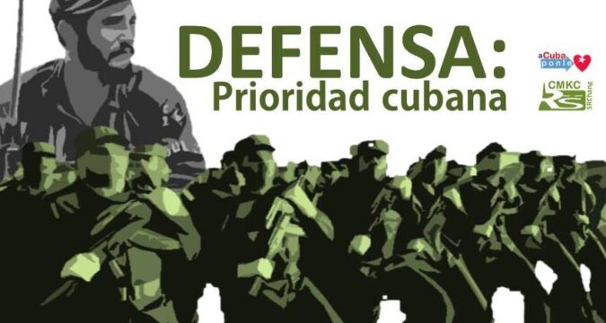
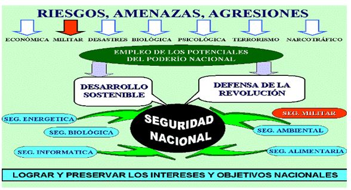

La Seguridad Nacional constituye un elemento esencial para la preservación de la soberanía, la independencia y el desarrollo sostenible de la nación cubana. Este sitio expone los fundamentos, principios, dimensiones y desafíos de la Seguridad Nacional en el contexto actual.

En el contexto actual, caracterizado por profundas transformaciones políticas, económicas y sociales a escala internacional, el análisis de la Seguridad Nacional adquiere una importancia estratégica para la formación integral del profesional universitario.
Este sitio web tiene como objetivo exponer los fundamentos teóricos y prácticos de la Seguridad Nacional de Cuba, abordando:
- Sus principios fundamentales
- Las dimensiones de la seguridad nacional
- El sistema de dirección estratégica
- Los principales riesgos, amenazas y vulnerabilidades
- La relación con el modo de actuación profesional
Se enfatiza la importancia de valores como el patriotismo, la honestidad y la responsabilidad social en la actuación profesional.
Fundamentos de la Seguridad Nacional de Cuba
Concepto de Seguridad Nacional de Cuba
La Seguridad Nacional de Cuba se concibe como la condición alcanzada por el país en correspondencia con su poderío nacional, que le permite prever y adoptar acciones para el logro y preservación de sus intereses y objetivos nacionales, pese a los riesgos, amenazas y agresiones de carácter interno y externo.
No se trata de un conjunto aislado de acciones, sino de un estado dinámico, resultado de la integración armónica del desarrollo sostenible y la defensa de la Revolución Cubana. Esta concepción reconoce el carácter multidimensional de la seguridad y su vínculo inseparable con el bienestar del pueblo y la continuidad del proyecto social cubano.
Principios en los que se fundamenta la Seguridad Nacional de Cuba
Los fundamentos de la Seguridad Nacional de Cuba se sustentan en un conjunto de principios que orientan la acción del Estado y la participación consciente del pueblo:
Principios Políticos y Sociales
- Fortalecimiento de la unidad del pueblo en torno al Partido Comunista de Cuba
- Perfeccionamiento del sistema político, su legalidad e institucionalidad
- Constante formación y desarrollo del capital humano
- Consolidación de la propiedad social socialista
Principios Defensivos y Estratégicos
- Confianza en los esfuerzos propios como base del desarrollo
- Aplicación del enfoque de desarrollo sostenible
- Preparación permanente del país para la defensa
- Vigilancia revolucionaria ante riesgos y amenazas
Estos principios expresan el carácter popular, defensivo e integral de la Seguridad Nacional.
Dirección Estratégica de la Seguridad Nacional de Cuba
La dirección estratégica como sistema
La dirección estratégica de la Seguridad Nacional de Cuba se concibe como un sistema integrado por las estructuras del sistema político y social, las acciones e interrelaciones que entre ellas se establecen, así como las políticas y estrategias del Partido Comunista de Cuba, el Estado y el Gobierno, con el propósito de alcanzar y preservar los intereses y objetivos nacionales.
Este proceso exige previsión, sentido de urgencia y capacidad de adaptación ante escenarios cambiantes.
Componentes del sistema de dirección estratégica
En la dirección estratégica intervienen actores institucionales y sociales clave:
Estructuras Políticas
- Partido Comunista de Cuba (fuerza dirigente superior)
- Estado y Gobierno (implementación de políticas)
- Asamblea Nacional del Poder Popular
- Consejo de Estado
- Consejo de Ministros
Participación Social
- Instituciones estatales
- Organizaciones sociales
- El pueblo como sujeto activo
- Participación consciente en la defensa
El poderío nacional como garantía de la Seguridad Nacional
El poderío nacional se entiende como la integración armónica de los potenciales del país puestos al servicio de los intereses y objetivos nacionales. Está compuesto por:
Potenciales Tangibles
- Potencial Económico-social
- Potencial Científico-tecnológico
- Potencial Militar
Potenciales Intangibles
- Potencial Político-moral
- Potencial Cultural
- Relaciones exteriores
Base de Todos
- Capital Humano
- Formado y comprometido
- Principal recurso estratégico
Dimensiones de la Seguridad Nacional de Cuba

Principales dimensiones de la Seguridad Nacional
La Seguridad Nacional se materializa en diversas dimensiones que abarcan la totalidad de la vida social:
Dimensiones Políticas y Jurídicas
- Seguridad político-moral
- Seguridad interior
- Seguridad jurídica
Dimensiones Económicas y Técnicas
- Seguridad económico-social
- Seguridad militar
- Seguridad científico-tecnológica
Dimensiones Estratégicas
- Seguridad de la información
- Seguridad ambiental
- Seguridad cultural
Cada una de estas dimensiones posee componentes materiales y espirituales interrelacionados.
La seguridad económico-social
La seguridad económico-social se define como la condición alcanzada por el país que le permite garantizar un desarrollo sostenible, sustentado en la eficiencia, el control económico y los esfuerzos propios.
Incluye componentes fundamentales como:
- Seguridad alimentaria - Garantizar el acceso a alimentos para toda la población
- Seguridad financiera interna - Estabilidad del sistema bancario nacional
- Seguridad monetaria-financiera - Control de la política monetaria y cambiaria
- Seguridad energética - Garantizar el suministro de energía
- Seguridad hidráulica - Gestión y protección de recursos hídricos
El desarrollo económico y el desarrollo social se conciben como procesos inseparables.
La seguridad cultural como dimensión integradora
La seguridad cultural protege la identidad nacional, los valores, tradiciones y la memoria histórica del pueblo cubano. Constituye una dimensión integradora, pues fortalece la cohesión social y la resistencia frente a:
- La colonización cultural
- La subversión ideológica
- La pérdida de identidad nacional
La defensa de la identidad nacional es un pilar esencial para la unidad y la continuidad del proyecto social cubano.
Desarrollo sostenible y Seguridad Nacional
El desarrollo sostenible es una de las direcciones estratégicas fundamentales de la Seguridad Nacional. En Cuba se concibe como un proceso:
- Socialmente justo - Equidad y justicia social
- Económicamente viable - Eficiencia y rentabilidad
- Ecológicamente equilibrado - Protección ambiental
- Orientado al socialismo - Construcción del proyecto social cubano
Su vínculo con los Objetivos de Desarrollo Sostenible (ODS) representa una oportunidad para América Latina y el Caribe, basada en la cooperación, la solidaridad y el respeto mutuo.
Desafíos, Riesgos, Amenazas y Vulnerabilidades
Vulnerabilidades y desafíos internos
Entre los principales desafíos internos se encuentran limitaciones que requieren prevención, control y participación activa de la sociedad:
- Limitaciones del modelo económico-social - Restricciones en la capacidad productiva y generación de ingresos
- Manifestaciones de corrupción - Desvío de recursos públicos y pérdida de confianza
- Marginalidad - Exclusión social y desigualdad económica
- Delincuencia - Afectación a la seguridad ciudadana
- Indisciplina social - Debilitamiento del orden y la cohesión social
Riesgos y amenazas externas
Las amenazas externas están marcadas por el contexto internacional y, en particular, por la política de los Estados Unidos hacia Cuba. Se caracterizan por:
- Bloqueo económico, financiero y comercial - Restricción de intercambios y financiamiento internacional
- Subversión política - Intentos de desestabilización política
- Subversión mediática y cultural - Influencia de medios adversarios y colonización cultural
- Presión diplomática - Aislamiento internacional y sanciones
Impacto en la esfera económico-social y político-moral
Los riesgos y amenazas inciden directamente en:
Desarrollo Económico-Social
- Afectación a la calidad de vida
- Limitaciones en el acceso a servicios
- Restricciones al desarrollo
Seguridad Político-Moral
- Presión ideológica
- Debilitamiento de la unidad
- Amenaza a la estabilidad social
Su enfrentamiento requiere un enfoque sistémico, multidisciplinario e interinstitucional, así como la resiliencia del sistema cubano.
La Seguridad Nacional y el Modo de Actuación Profesional
El papel del profesional universitario en la Seguridad Nacional
El profesional universitario tiene la responsabilidad de actuar con ética, compromiso social y conciencia política, contribuyendo desde su ámbito laboral a la Seguridad Nacional y al desarrollo del país.
Valores fundamentales que guían la actuación profesional:
Patriotismo
Amor y defensa de la patria, sus valores e intereses nacionales. Compromiso con la soberanía e independencia de Cuba.
Honestidad
Actuación ética, transparencia y rectitud en el desempeño de funciones. Respeto a la ley y a los principios morales.
Responsabilidad Social
Compromiso con el bienestar colectivo, el desarrollo sostenible y la contribución al proyecto social cubano.
Vinculación entre profesión, territorio y Seguridad Nacional
La Seguridad Nacional se expresa también en el ámbito territorial. El profesional debe:
- Identificar riesgos y vulnerabilidades en su entorno - Diagnóstico de problemas locales
- Aportar soluciones coherentes - Propuestas prácticas desde su especialidad
- Actuar con perspectiva nacional - Alineación con intereses y objetivos nacionales
- Promover el desarrollo sostenible - Equilibrio entre economía, sociedad y ambiente
Estos aportes pueden realizarse desde:
- La universidad como espacio de formación e investigación
- La comunidad como espacio de acción social
- La institución laboral como espacio de desarrollo profesional
La Seguridad Nacional de Cuba es un proceso integral, dinámico y multidimensional, sustentado en:
- El poderío nacional en todas sus dimensiones
- El desarrollo sostenible como estrategia de largo plazo
- La defensa de la Revolución y sus conquistas sociales
- La unidad del pueblo y la participación popular
- El capital humano como garantía de la soberanía
Su estudio permite comprender la importancia de la unidad, la participación popular y el papel del capital humano como garantía de la soberanía y la independencia de Cuba.
El fortalecimiento de la Seguridad Nacional exige la actuación consciente y responsable de todos los ciudadanos, en particular de los profesionales formados en la educación superior, quienes tienen el deber de contribuir desde sus disciplinas al logro de los objetivos nacionales.
Bibliografía Básica
- Seguridad Nacional y Defensa Nacional para los estudiantes de la Educación Superior. Editorial Félix Varela, 2013.
- Fundamentos de la Seguridad Nacional. Soporte digital.
- Libro Seguridad, Capítulo II.
- Glosario Seguridad y Defensa Nacional. CODEN, 2007.
- Discursos y documentos del Comandante en Jefe Fidel Castro Ruz.
Fuentes Consultadas
- Contenido y estructura desarrollados para propósitos educativos
- Documentos oficiales de la República de Cuba
- Materiales de formación de educación superior cubana